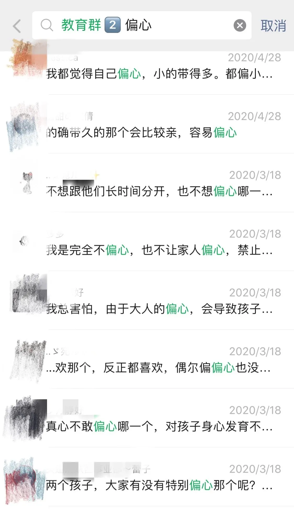
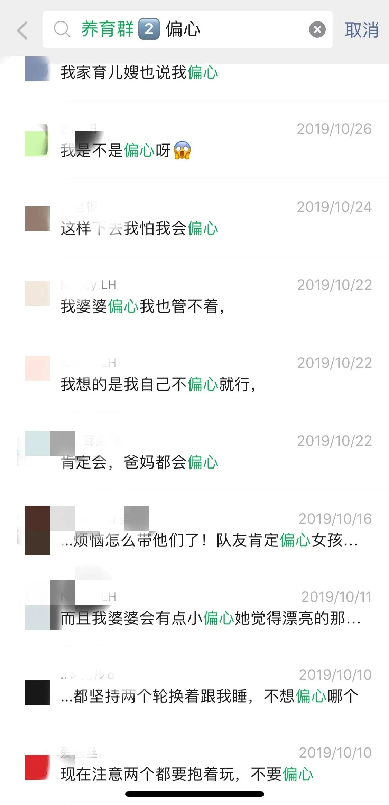
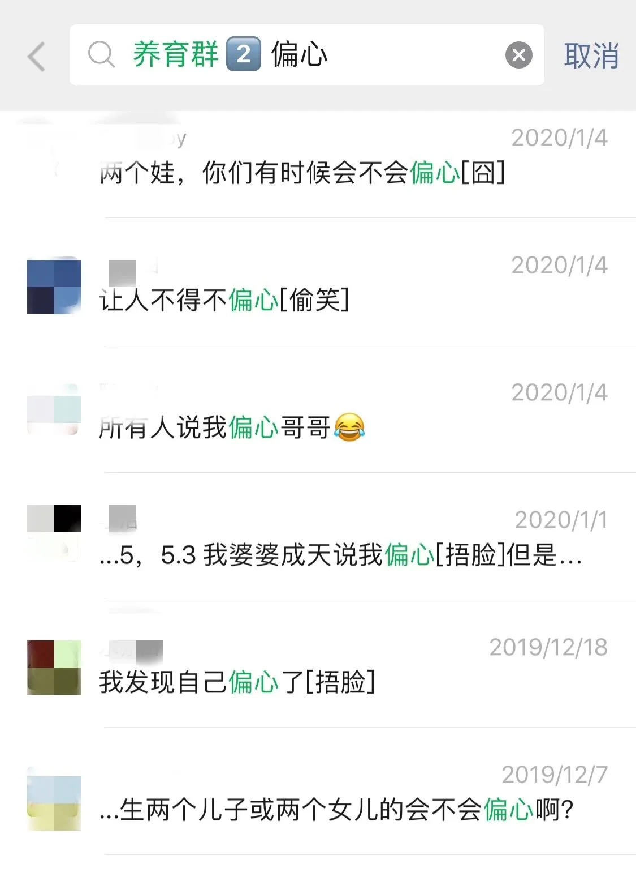
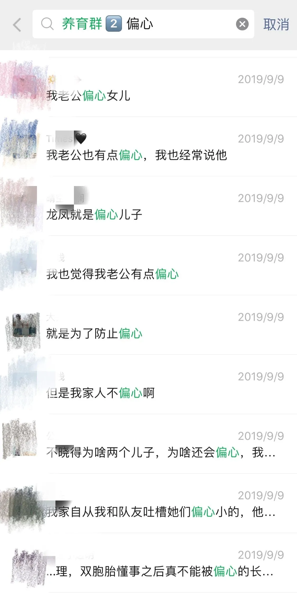
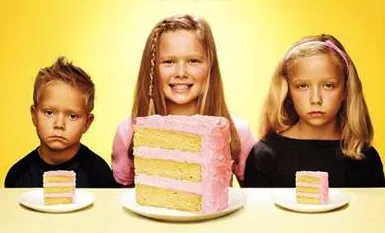

孖仔帮
公众号ID：twinsbang
关注
文|圆圈妈
网图|侵删
我的原生家庭，上有两个姐姐，下有一个弟弟，小时候，我经常问我妈：“我们四姐弟，你最喜欢哪个？”我妈总是回答：“大家都一样”可是我明明感觉到她最喜欢的还是大姐。
因此，当我的双胞胎出生后，我暗自下决心，一定要公平地养育两个孩子，绝不偏心，一定不要像我妈那样明明有最喜欢的孩子却口是心非。
然而做这个决定并付诸行动，真的太难了。每个妈妈和每个孩子的个性特点都不相同，如果这个孩子恰巧和妈妈个性相投，那么妈妈就会格外地宠爱他；反之同理，有的孩子和妈妈可能就没有那么亲近了。
我似乎明白了我妈为何最喜欢大姐了，因为投缘。而今日，当了双胞胎妈妈的我确实是对某个孩子投缘，对另外一个不感兴趣，别问我为什么，这种感觉我真的说不上来。
跟我一样有这种复杂心理的妈妈竟然也不少，双胞胎社群上一搜“偏心”，立马蹦出很多跟我同样情况的妈妈。
01
02
03
04
滑动查看更多
今天这篇来说说偏爱双胎之一的背后，作为妈妈的我，经历着怎样的内心世界。
我总是在某个时间段，偏爱某个孩子，特别厌烦另一个孩子，到了某阶段，又转变成偏爱这个孩子，不喜欢另一个孩子。
一岁前，我特别偏心圆圆，可能是圆圆满月后的那次大病，把我吓得至今有阴影，只要他有什么风吹草动，我立马飚过去嘘寒问暖，哭了，尿了，睡了...都不准别人来搞，必须自己亲自来才放心。
不知道是不是我带的多的缘故，大家都说圆圆长得像我多一点，如此一来我对他更加偏爱些，情感的天平也总是向他倾斜。
至于圈圈呢，除了不是很喜欢，有时候还觉得很厌烦，好想逃离他，因为他老爱哭，怎么哄都搞不定，饿了吵着要喝奶那种哭，可以轰动整个小区；给他换个尿不湿，都能嚎叫半天；吃奶又慢，总是要动下奶嘴才闭着眼慢悠悠地小戳一下，让急性子的我特别火大。
圆圈爸调侃我是圆圆的亲妈，是圈圈的后妈，建议我要对圈圈好一点，还经常制造机会让我多带圈圈，可我总找借口回避。带习惯了圆圆，我感觉跟圈圈不亲，对他不熟，没信心搞定那么难缠的他。
我曾试过要多亲近他，但每次抱着他就想着另外一个娃，总感觉我们之间隔着一个圆圆，就好像隔了一座天涯海角，我的母爱不够深远，无法传递给他。
为此，我经常陷入这样的窘境无法自拔：行动上偏爱圆圆，心理上却心疼着被我忽略的圈圈。
但不知从何开始，大概是2岁多吧，我发现我和喜爱的圆圆越来越合不来了，我说什么话他都对我说不，好像永远听不懂我的话似的，为了和他讲明白一件事儿，比登蜀道上青天还要难，关键是费很大心思都无济于事，他依然我行我素。
有时候我真的对他敬而远之，不愿意过多交流，真想对他放任不管，看到他这样固执任性，不听劝，我就觉得自己好失败，说起我为什么要疏远他？可能是因为我不能接受他的性格吧。
因为我一直偏爱他，而他也和我很投缘，所以我把他也变成和我一样了，特别是性格，竟然跟我如出一撤，犟起来像茅坑里的石头又臭又硬，而我，恰恰是从内心里一直很讨厌着自己这种怪异的性格。
圈圈呢，我竟然越看越喜爱，暖人，贴心，乖巧听话。当我在圆圆那里碰一鼻子灰时，就来圈圈这里求安慰，还经常跟圆圈爸抢着带圈圈，刻意回避圆圆。
圆圈爸以为我改邪归正了，终于像个亲妈的样子了，我一脸苦笑，手心手背都是肉，我太难了！
一直以来，我很想给他们公平的爱，可是我总会被自己的私心和莫名其妙的情绪控制着，有时候偏向圆圆，有时候偏向圈圈。
然而，越是想要不偏不斜地对待两个孩子，越是事与愿违，这让我总是特别烦躁，不知不觉地就对某个孩子冷冷地敷衍了。
我知道，很多妈妈跟我一样初为人母，当看到两个软糯的小肉球时，瞬间母爱爆表，暗暗下决心一定要公平地去爱他们，但其实硬要自己对两个孩子一碗水端平是没有道理的。
强迫自己给双胞胎100%的绝对公平，这其实限制了人的心灵。而且，这也不只是在育儿时会发生的情况，在我们的人生中，“绝对公平” 其实是条夺走我们心灵平静的咒语。
由于根本做不到“绝对公平”，我们会产生自责的感觉，当一直有这样的负面情绪，我们就会烦躁不安，内心也难以平静。
手指有长有短，缘分有深有浅，我可以有最爱吃的红烧肉，偏爱的口红色号，为何不可以有最喜欢的孩子？
那些跟我一样因偏爱双胎之一而时常感到自责的妈妈们，咱们一起抛开愧疚吧，与其过分在意自己的情绪而自责烦恼，倒不如坦然接受自己的心理变化。
母亲和孩子们之间，其实互相的关系也是要看是否投缘，是否性格相合。我们最好能够承认这一点，确实有时候会和这个孩子更投缘，和那个孩子不合脾气。
《日本妈妈的两个孩子养育课》
若是能坦然地接受这个事实，在与双胞胎孩子们的相处中，也许就没有那么多负面情绪，也许就多一点从容，少一点愧疚了。
当我们都能平衡到与两个孩子之间的关系后，解开了心结，就再也不会觉得自己偏心了，再也不被内心那种无力感煎熬了。
也许依然会在某个不经意间，在某件事情上，特别喜欢某个孩子，但仅仅是一个人的喜欢和投缘，不代表我们不爱另外一个孩子，不对另外一个孩子公平了。
有时厌烦着某个孩子只是表面上，我们的内心里由始至终都是爱着自己的孩子，内心里依然在为他操心操肺。
无论与孩子是否投缘，都应该对每个孩子全情付出，如果我们一直牢记这一点，和孩子们的相处也会更容易，我们的内心也会变得更舒展，更充盈。
如果所有方法都试过了，依然无法转变观念，依然无法改变你的确只喜欢其中一个孩子这个事实，那么请在孩子们还小的时候，尽量不要露骨地表现出你的偏爱。
倘若有一天，双胎之一问你：“妈妈，你最喜欢哪个孩子呢？”不管真相如何，即使是说谎，都要回答：“是你哦！”
参考文献:《二孩时代养育经》《日本妈妈的两个孩子养育课》
-END-
今日互动话题
#你有没有偏心双胞胎之一？#
评论区聊一聊呗！
微信公众号：孖仔帮
ID : twinsbang
专注双胞胎孕育，养育，教育经验分享
扫码关注我们
点一下你会更好看耶






